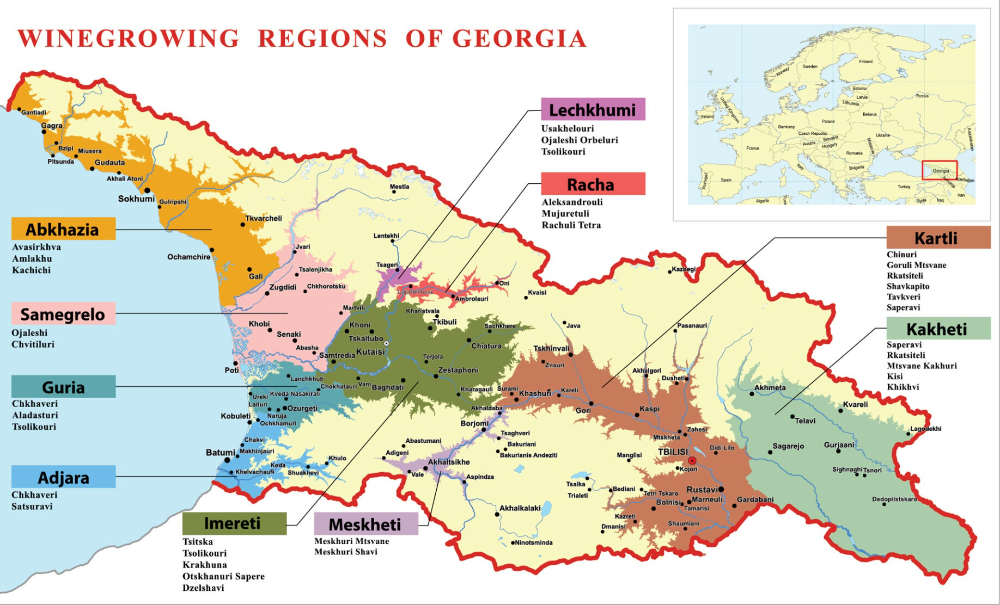

Georgia (the country)
Top Picks
Georgia's two most important grapes — one ancient white that produces the world-famous amber wines, and one bold red that is Georgia's signature varietal.
| Category | What to Look For | Why |
|---|---|---|
| White / Amber Wine | Rkatsiteli (especially Qvevri style) | Georgia's most planted grape. When fermented in traditional clay qvevri with skin contact, it produces stunning amber/orange wines with dried apricot, tea, and earthy complexity you won't find anywhere else. |
| Red Wine | Saperavi from Kakheti | Georgia's signature red — deeply colored, bold, tannic, with blackberry and dark spice. One of the most distinctive red grapes in the world. Even the juice is red, not just the skin. |
Georgian Wines to Look For
These bottles represent the breadth of Georgian wine — from skin-contact amber Rkatsiteli to powerful Saperavi reds. Georgia has over 500 indigenous grape varieties, so nearly every bottle is something you've never tried before.
| Wine | Varietal / Region | Notes | Taste | Est. Price |
|---|---|---|---|---|
| Pheasant's Tears Rkatsiteli Qvevri | Rkatsiteli / Kakheti | One of the pioneers of natural Georgian wine; fermented in traditional qvevri clay vessels | Apricot, Tea, Earthy | ~$25–35 |
| Orgo Saperavi | Saperavi / Kakheti | Deep, powerful red from one of Georgia's top modern producers | Blackberry, Spice, Structured | ~$30–40 |
| Tbilvino Kisi Qvevri | Kisi / Kakheti | Traditional amber wine showcasing Georgia's unique skin-contact style | Honey, Orange Peel, Herbal | ~$20–30 |
| Teliani Valley Saperavi | Saperavi / Kakheti | Classic example of Georgia's signature red grape; great everyday value | Dark Fruit, Plum, Bold | ~$15–20 |
| Baia's Wine Tsitska-Tsolikouri | Tsitska–Tsolikouri / Imereti | Boutique family winery highlighting western Georgian grapes in a crisp, fresh style | Citrus, Mineral, Fresh | ~$25–35 |
| Château Mukhrani Chinuri | Chinuri / Kartli | Historic estate producing elegant, refined whites from rare indigenous grapes | Apple, Floral, Crisp | ~$18–25 |
| Papari Valley Rkatsiteli Qvevri | Rkatsiteli / Kakheti | Traditional clay-vessel fermentation with minimal intervention; textbook Kakhetian amber wine | Dried Fruit, Tea, Tannic | ~$22–30 |
| Khareba Kindzmarauli | Saperavi / Kakheti (Kindzmarauli) | Famous Georgian semi-sweet red from a protected appellation — rich, smooth, approachable | Cherry, Sweet, Smooth | ~$15–20 |
General Info
Georgian wine is just as ancient as it comes. 8,000 years ago, wine is thought to have been domesticated for drinking here. During the Soviet Union, quality winemaking was largely reduced to personal use. The Soviet Union set up wine manufacturing facilities in Georgia that created low-quality and sweet wines for the Eastern Bloc. After the Soviet Union fell, a movement began to preserve the over 500 indigenous grapes that were at risk of extinction.
Roughly 70% of the grapes grown in Georgia are white, and the country champions orange or “amber” wines made by fermenting white grapes with their skins — a technique that predates modern winemaking by millennia.
Qvevri and the OG Natural Winemakers
Georgian winemakers have been using qvevri for thousands of years. These large clay amphorae are buried underground and filled with grapes (often skins, stems, and all), where the wine ferments naturally with native yeasts. White grapes that are pressed and fermented with their skins and stems create an orange color — now a trendy wine with the hip and cool crowd, but the Georgians have been doing it for millennia!
The earth keeps the temperature steady, creating a slow, traditional fermentation. This ancient method fits perfectly with today's natural wine movement, which celebrates minimal intervention and old-school techniques — making Georgian wine feel both historic and surprisingly modern. UNESCO recognized the ancient Georgian tradition of qvevri winemaking as an Intangible Cultural Heritage of Humanity.
Region & Grape Overview
